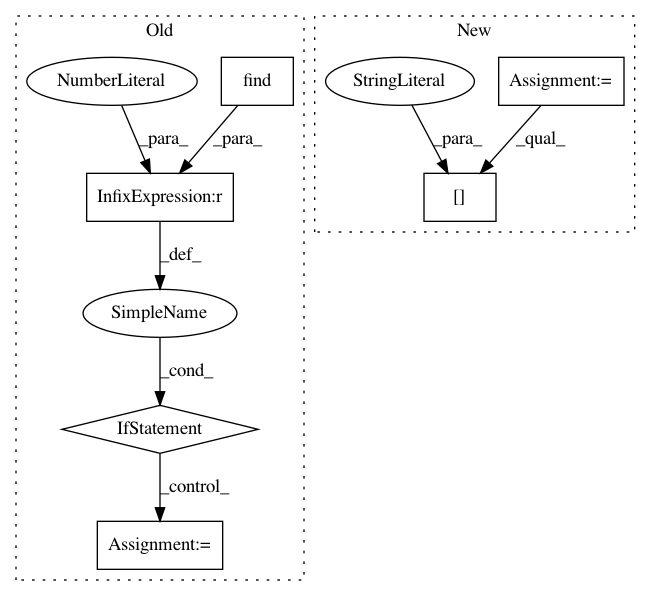

6cb62da4205e52f91c9c8fd94dbcdfaca717eb36,benchmarking/frameworks/caffe2/caffe2.py,Caffe2Framework,_collectDelayData,#Caffe2Framework#Any#Any#Any#,303
Before Change
useful_rows = [row for row in rows if row.find(self.IDENTIFIER) >= 0]
i = 0
while (i < len(useful_rows)):
if (i < len(useful_rows) and
(useful_rows[i].find(self.DELAYS_START) >= 0)):
result = {}
i = self._parseDelayData(useful_rows, result, i)
if (len(result) > 1) and (self.NET_DELAY in result):
// operator delay. Need to strip the net delay from it
del result[self.NET_DELAY]
results.append(result)
i += 1
if len(results) > total_num:
// Android 5 has an issue that logcat -c does not clear the entry
After Change
useful_rows = [row for row in rows if row.find(self.IDENTIFIER) >= 0]
i = 0
while (i < len(useful_rows)):
row = useful_rows[i]
valid_row = row[(row.find(self.IDENTIFIER) + len(self.IDENTIFIER)):]
try:
result = json.loads(valid_row)
results.append(result)
except Exception as e:
In pattern: SUPERPATTERN
Frequency: 3
Non-data size: 6
Instances
Project Name: facebook/FAI-PEP
Commit Name: 6cb62da4205e52f91c9c8fd94dbcdfaca717eb36
Time: 2018-06-04
Author: 34827865+llyfacebook@users.noreply.github.com
File Name: benchmarking/frameworks/caffe2/caffe2.py
Class Name: Caffe2Framework
Method Name: _collectDelayData
Project Name: THUNLP-MT/THUMT
Commit Name: 051bd416d3c41002f6d58b9dd71516a27243d178
Time: 2017-11-11
Author: playinf@stu.xmu.edu.cn
File Name: thumt/launcher/ensemble_translator.py
Class Name:
Method Name: main
Project Name: THUNLP-MT/THUMT
Commit Name: 051bd416d3c41002f6d58b9dd71516a27243d178
Time: 2017-11-11
Author: playinf@stu.xmu.edu.cn
File Name: thumt/launcher/translator.py
Class Name:
Method Name: main